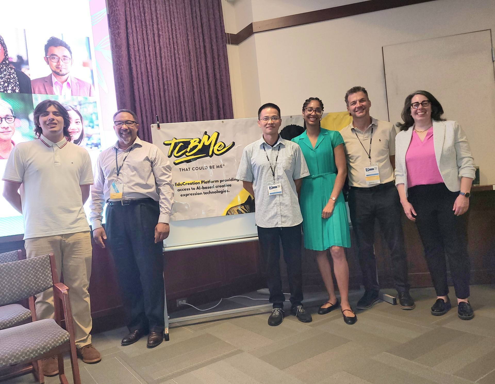

I joined the That Could Be Me Foundation after meeting founder Derrick Tarver with Dr. Yang Wang at Community-Driven Research Day in Philadelphia. Our collaboration focused on translating gamification research into practical ideas for TCBMe's youth platform.
My contributions included technical research, product ideation, and AI-assisted development support using Python and JavaScript. The work centered on engagement systems that could help young users express identity, track progress, and participate in a supportive community.
- OrganizationTCBMe Foundation
- RoleResearch Staff Member
- Funding$10,000 Project
- PresentationPhiladelphia Trauma Training Conference
Designing engagement around meaningful progress.
Profiles and Identity
Explored customizable profiles, bios, and profile images as tools for personal expression.
Progress Systems
Developed concepts for points, streaks, milestones, levels, badges, and challenges.
Community Interaction
Considered leaderboards, reactions, comments, and team-based goals within a youth-centered platform.
Sharing the work with practitioners.
